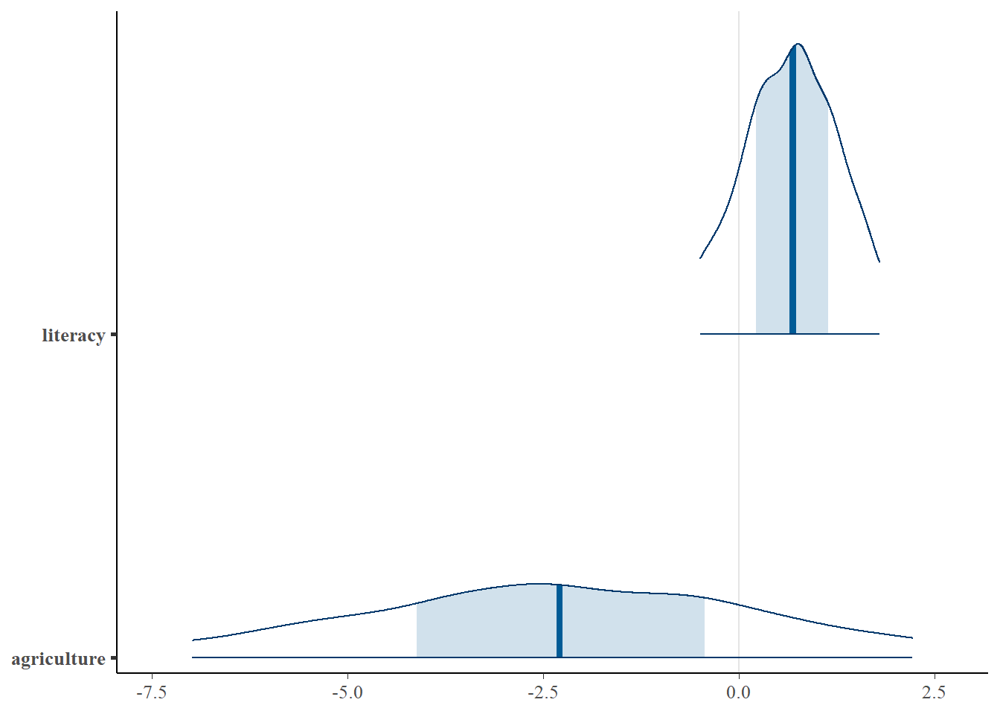
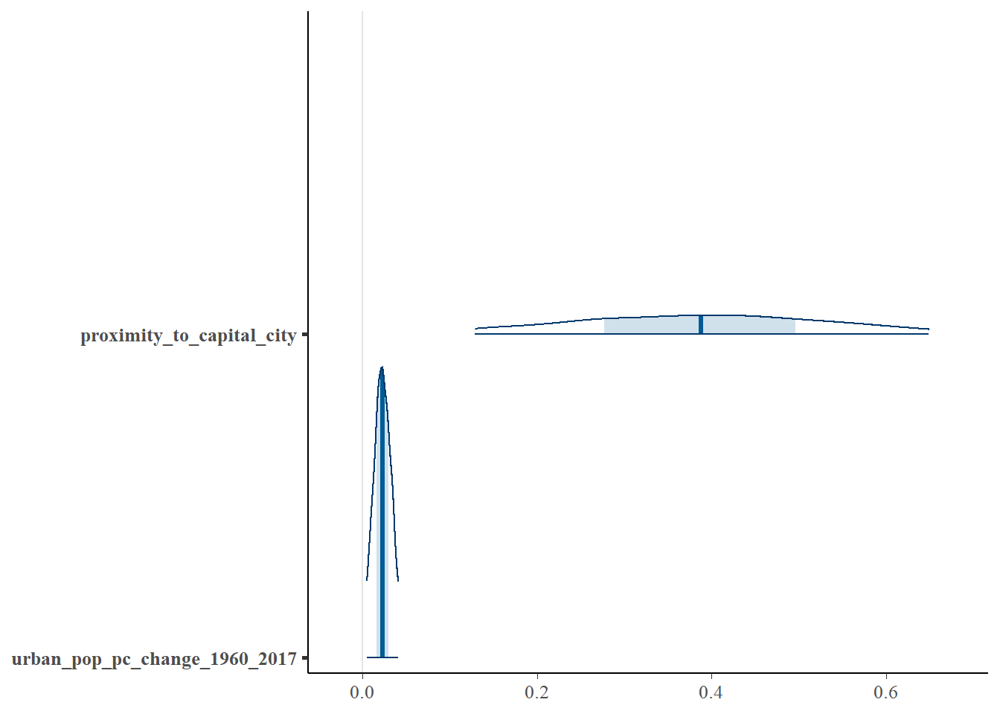
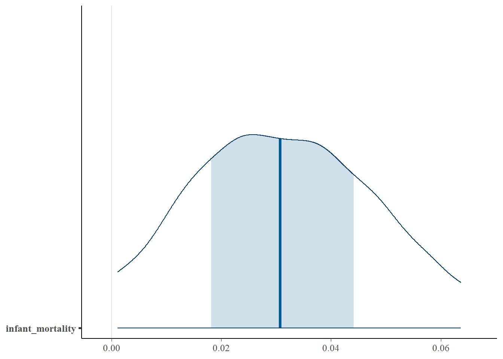

stan_glm
family: gaussian [identity]
formula: degree_of_endangerment_numeric ~ literacy + infant_mortality +
agriculture + proximity_to_capital_city + minority_ed_policy +
urban_pop_pc_change_1960_2017
observations: 72
predictors: 7
------
Median MAD_SD
(Intercept) 0.6 0.8
literacy 0.7 0.7
infant_mortality 0.0 0.0
agriculture -2.3 2.7
proximity_to_capital_city 0.4 0.2
minority_ed_policy 0.4 0.3
urban_pop_pc_change_1960_2017 0.0 0.0
Auxiliary parameter(s):
Median MAD_SD
sigma 1.0 0.1
------
* For help interpreting the printed output see ?print.stanreg
* For info on the priors used see ?prior_summary.stanregIntroduction
The models used for this project were the Bayesian model and Ordinal model. The Bayesian model (stan_glm) was used for predicting how likely the covariates (literacy, infant mortality, and agriculture) would have an impact on the degree of endangerment. And the ordinal model (stan_plor) was used for predicting the probability of endangerment of each of the degrees of endangerment.
Build Models
Below are the results after running the Bayesian model and Ordinal model as well as their mathematical representation/formula.
Model A: Predict Numeric Degree of Endangerment
\[ \begin{aligned} \operatorname{degree\_of\_endangerment\_numeric} &= \alpha + \beta_{1}(\operatorname{literacy})\\ &\quad + \beta_{2}(\operatorname{infant\_mortality}) + \beta_{3}(\operatorname{agriculture})\\ &\quad + \beta_{4}(\operatorname{proximity\_to\_capital\_city}) + \beta_{5}(\operatorname{minority\_ed\_policy})\\ &\quad + \beta_{6}(\operatorname{urban\_pop\_pc\_change\_1960\_2017}) + \epsilon \end{aligned} \]
# A tibble: 7 × 3
term estimate std.error
<chr> <dbl> <dbl>
1 (Intercept) 0.595 0.758
2 literacy 0.689 0.682
3 infant_mortality 0.0247 0.0121
4 agriculture -2.29 2.73
5 proximity_to_capital_city 0.388 0.162
6 minority_ed_policy 0.446 0.263
7 urban_pop_pc_change_1960_2017 0.0229 0.0108\[ \begin{aligned} \operatorname{\widehat{degree\_of\_endangerment\_numeric}} &= 0.595 + 0.689(\operatorname{literacy})\\ &\quad + 0.025(\operatorname{infant\_mortality}) - 2.292(\operatorname{agriculture})\\ &\quad + 0.388(\operatorname{proximity\_to\_capital\_city}) + 0.446(\operatorname{minority\_ed\_policy})\\ &\quad + 0.023(\operatorname{urban\_pop\_pc\_change\_1960\_2017}) \end{aligned} \]


Model B: Predict Probability of Degree of Endangerment
\[ \begin{aligned} \operatorname{\phi} &= \beta_{1}(\operatorname{literacy})\\ &\quad + \beta_{2}(\operatorname{infant\_mortality}) + \beta_{3}(\operatorname{agriculture})\\ &\quad + \beta_{4}(\operatorname{proximity\_to\_capital\_city}) + \beta_{5}(\operatorname{minority\_ed\_policy})\\ &\quad + \beta_{6}(\operatorname{urban\_pop\_pc\_change\_1960\_2017}) \end{aligned} \]
\[ \begin{aligned} \log\left[ \frac { P( \operatorname{vulnerable} \geq \operatorname{definitely\ endangered} ) }{ 1 - P( \operatorname{vulnerable} \geq \operatorname{definitely\ endangered} ) } \right] &= \alpha_{1} - \phi + \epsilon \\ \log\left[ \frac { P( \operatorname{definitely\ endangered} \geq \operatorname{severely\ endangered} ) }{ 1 - P( \operatorname{definitely\ endangered} \geq \operatorname{severely\ endangered} ) } \right] &= \alpha_{2} - \phi + \epsilon \\ \log\left[ \frac { P( \operatorname{severely\ endangered} \geq \operatorname{critically\ endangered} ) }{ 1 - P( \operatorname{severely\ endangered} \geq \operatorname{critically\ endangered} ) } \right] &= \alpha_{3} - \phi + \epsilon \\ \log\left[ \frac { P( \operatorname{critically\ endangered} \geq \operatorname{extinct} ) }{ 1 - P( \operatorname{critically\ endangered} \geq \operatorname{extinct} ) } \right] &= \alpha_{4} - \phi + \epsilon \end{aligned} \]
stan_polr
family: ordered [logistic]
formula: degree_of_endangerment_factor ~ literacy + infant_mortality +
agriculture + proximity_to_capital_city + minority_ed_policy +
urban_pop_pc_change_1960_2017
observations: 72
------
Median MAD_SD
literacy 0.8 1.0
infant_mortality 0.0 0.0
agriculture -3.2 4.1
proximity_to_capital_city 0.4 0.2
minority_ed_policy 0.7 0.4
urban_pop_pc_change_1960_2017 0.0 0.0
Cutpoints:
Median MAD_SD
vulnerable|definitely endangered 1.0 1.1
definitely endangered|severely endangered 2.5 1.2
severely endangered|critically endangered 4.0 1.3
critically endangered|extinct 6.1 1.4
------
* For help interpreting the printed output see ?print.stanreg
* For info on the priors used see ?prior_summary.stanreg# A tibble: 10 × 3
term estimate std.error
<chr> <dbl> <dbl>
1 literacy 0.805 0.988
2 infant_mortality 0.0307 0.0192
3 agriculture -3.18 4.12
4 proximity_to_capital_city 0.433 0.231
5 minority_ed_policy 0.681 0.379
6 urban_pop_pc_change_1960_2017 0.0312 0.0163
7 vulnerable|definitely endangered 1.01 1.13
8 definitely endangered|severely endangered 2.54 1.19
9 severely endangered|critically endangered 4.04 1.26
10 critically endangered|extinct 6.07 1.43 \[ \begin{aligned} \operatorname{\hat{\phi}} &=0.805(\operatorname{literacy})\\ &\quad + 0.307(\operatorname{infant\_mortality}) - 3.176(\operatorname{agriculture})\\ &\quad + 0.433(\operatorname{proximity\_to\_capital\_city}) + 0.681(\operatorname{minority\_ed\_policy})\\ &\quad + 0.031(\operatorname{urban\_pop\_pc\_change\_1960\_2017}) \end{aligned} \]
\[ \begin{aligned} \log\left[ \frac { P( \operatorname{vulnerable} \geq \operatorname{definitely\ endangered} ) }{ 1 - P( \operatorname{vulnerable} \geq \operatorname{definitely\ endangered} ) } \right] &= 1.013 - \hat{\phi}\\ \log\left[ \frac { P( \operatorname{definitely\ endangered} \geq \operatorname{severely\ endangered} ) }{ 1 - P( \operatorname{definitely\ endangered} \geq \operatorname{severely\ endangered} ) } \right] &= 2.542 - \hat{\phi} \\ \log\left[ \frac { P( \operatorname{severely\ endangered} \geq \operatorname{critically\ endangered} ) }{ 1 - P( \operatorname{severely\ endangered} \geq \operatorname{critically\ endangered} ) } \right] &= 4.039 - \hat{\phi} \\ \log\left[ \frac { P( \operatorname{critically\ endangered} \geq \operatorname{extinct} ) }{ 1 - P( \operatorname{critically\ endangered} \geq \operatorname{extinct} ) } \right] &= 6.065 - \hat{\phi} \end{aligned} \]

